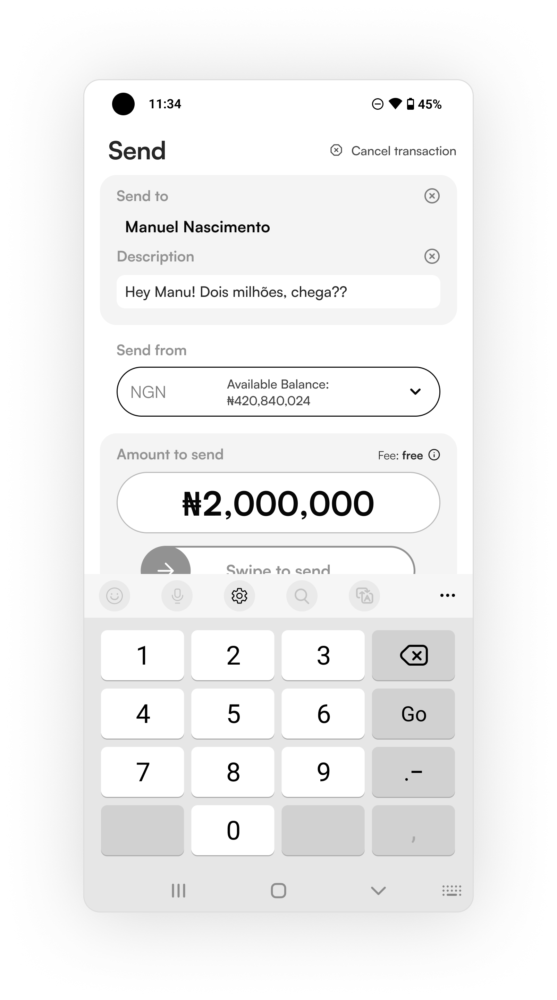
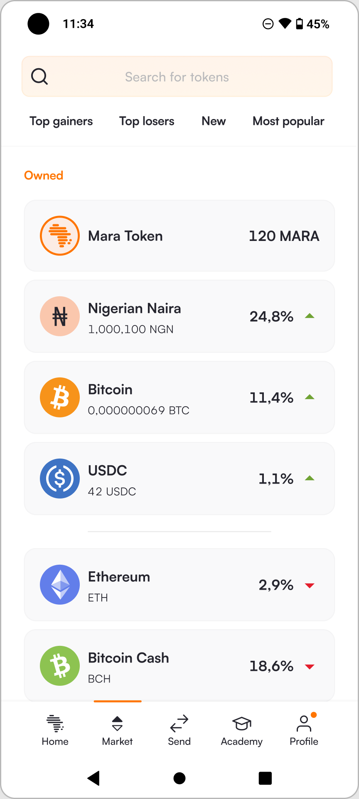
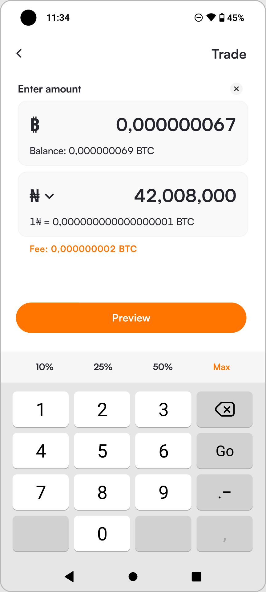
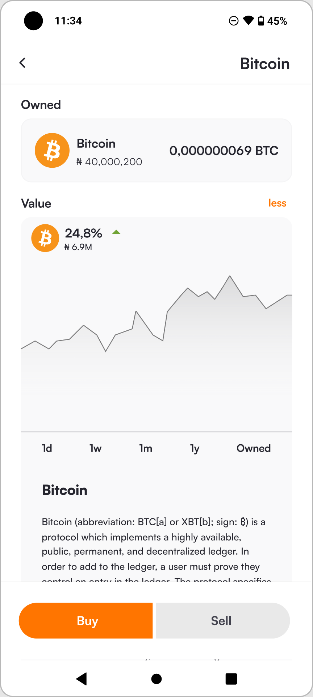
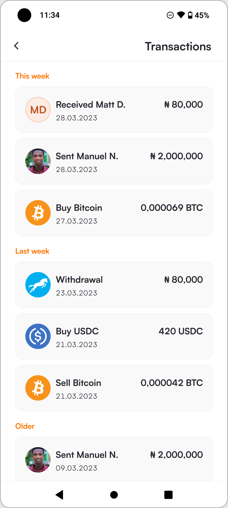
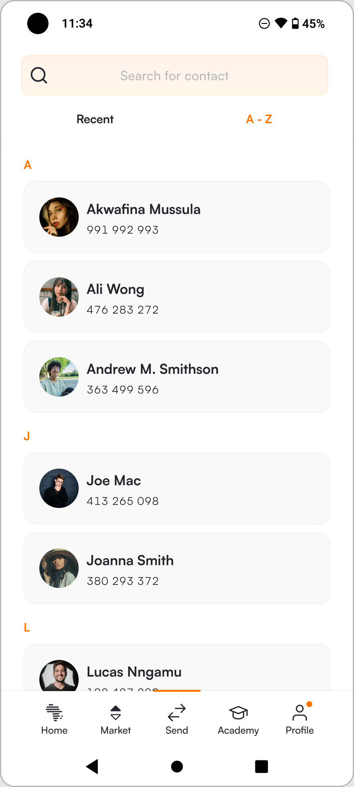
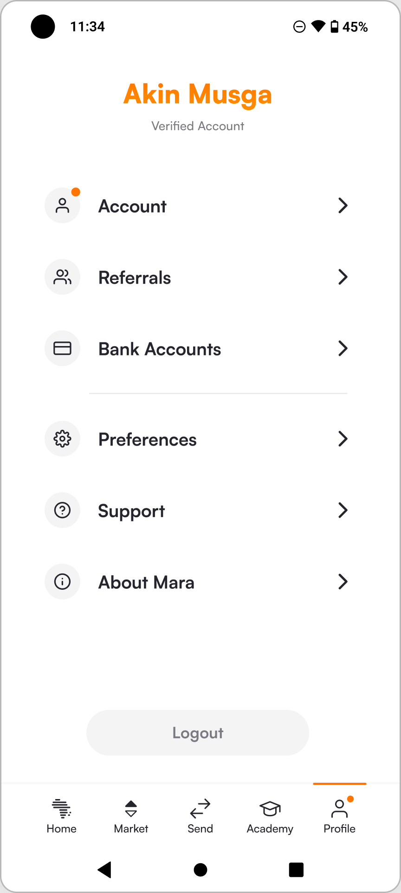

A Coinbase-backed crypto/fiat wallet for African markets, rebuilt end to end around one idea: a full redesign should rarely be about design.
Mara had scale but not coherence. The app contradicted itself screen to screen — and so did the code beneath it. Neither users nor the product team were satisfied with much of anything; the same complaints came back from every developer I spoke to.
At that size the risk isn't a rough edge here or there. It's that inconsistency quietly erodes trust in a product people move their money through.

I owned the redesign from the week-one audit of the state of design through to shipped product — the direction, the six core flows, and the decisions in between. Close enough to both the design and the product calls to keep it fast, and coherent as it grew.
I didn't reach for a reskin. The real problem was that the six core flows — Buy/Sell, Deposit/Withdraw, Send/Receive — were all the same thing (money in, money out) and yet nothing in the design or the code treated them as related. Metaphors were everywhere.
So the bet was to collapse those six into a single, consistent, reusable system — and use that vision to align three functions behind one direction. What I chose not to do was polish the surface and leave the incoherence underneath.
Instead of a long upfront gauntlet, I removed every non-essential step and served what remained at the moment it was needed — KYC at the point of a transaction that legally requires it, biometrics right after the first successful PIN auth. Users get a real taste of the product immediately, and complete the rest exactly when it makes sense.
Placeholder screens — real product screens export from Figma sections 08 deep & 09 context in the build pass.
The flows handled previews, fees, and valuation timeouts inconsistently — risky in crypto, where a rate can move under you. I made every transaction a predictable Preview→Commit pair. That builds trust through repetition, and it opened room in the flow (a note field, for instance) without crowding the moment of input.
Placeholder screens — export from Figma section 14 catch it.
I traced every use of the essential components (the value-box input above all), itemised the properties they actually needed, and rebuilt them to work together — empty states, refreshes, keyboard collisions and all. When one input isn't needed, it drops out without breaking the layout. Reusable components became reusable flows — a win for users (familiarity), engineering (less to build), and design (one metaphor, many jobs).
Placeholder screens — export from Figma sections 11 essentials & 12 system.
The whole redesign took a little over a month to design and one to two more to ship. Reception from users was, in the team's own words, overwhelmingly positive — incredulous even in a few cases.
Two numbers still open, César: did the 70% cut lift completed onboardings / activation / retention? And did pitching roadmap & growth to the board lead to a raise or approval? Either one turns this from "impressive scale" into "impressive result."
The lasting lesson wasn't a pattern or a component. It was that the job of a full redesign is to align people — design, engineering, management — behind a single vision they can all pull toward. The craft was how I earned the right to set that vision; it was never the point.






Real screens from the shipped redesign — exported straight from Figma at 3×. Click any to enlarge.